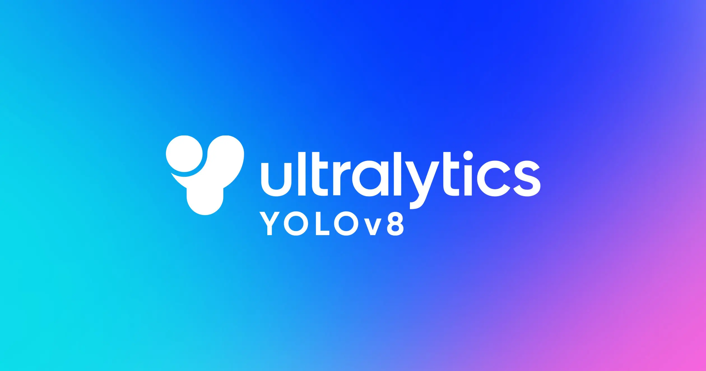

Feel Free To Explore My Projects!

CV Drone Simulation
Real-time military surveillance simulator using Unity and YOLOv8, where an AI drone streams footage via TCP sockets to a Python server for person detection, with results visualized in the 3D environment.


Terrain Generation
Procedural terrain generator that uses Perlin noise to create realistic 3D landscapes with natural elevation changes. It dynamically applies biome-specific textures—like grass, sand, rock, and water—based on height and slope, while physics-based erosion adds geological realism. The result is an immersive, dynamically generated environment

NavMesh and Unity Agents
This project implements navigation and pathfinding for AI agents in a 3D environment using Unity's NavMesh system. It features dynamic obstacle avoidance, AI behavior modeling, multi-agent coordination, and real-time path recalculation to ensure smooth navigation in complex terrains. The AI agents can adapt to changing environments and collaborate to achieve common goals, making this a robust solution for realistic simulations and games.

Portfolio Museum
Designed an immersive 3D museum in Unity to exhibit projects, implementing optimized textures, dynamic lighting, and fluid first-person movement. Enhanced realism through modular world design and performance-focused asset optimization."